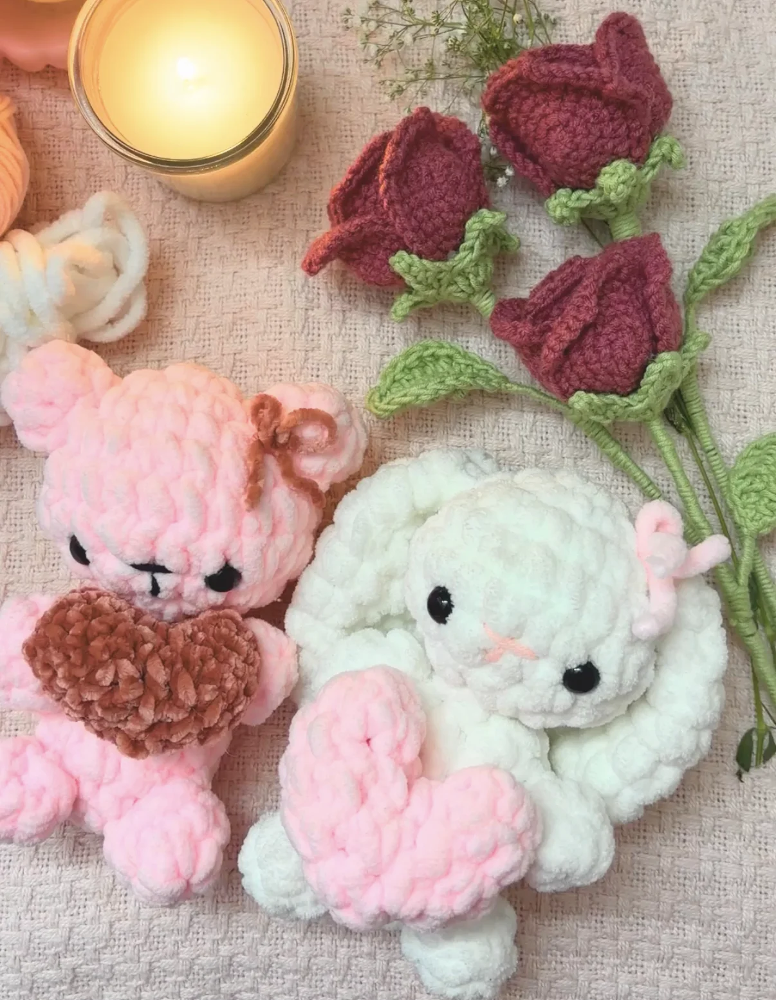
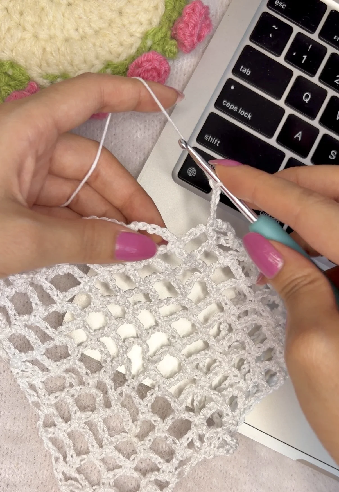
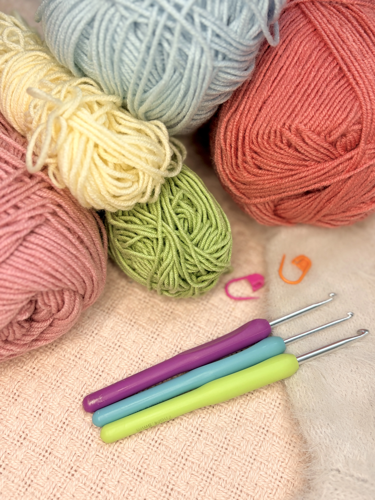

FLOWERS
Crochet Lily
A delicate crochet lily you can make with a few simple stitches.
View Pattern →Discover free written patterns, step-by-step tutorials, and creative ideas to inspire your next crochet project.
Explore Written Patterns
Explore my latest crochet projects and make them yourself.
FLOWERS
A delicate crochet lily you can make with a few simple stitches.
View Pattern →
FLOWERS & PLANTS
A cute crochet planter perfect for adding handmade charm.
View Pattern →

ACCESSORIES
A cozy, beginner-friendly hairband with soft zigzag stripes.
View Pattern →EXPLORE

Follow along with Stitchy Days crochet tutorials and turn a ball of yarn into something beautiful.
Watch on YouTube
Hi I’m Meghna, the creator behind Stitchy Days, where I share crochet tutorials, written patterns, and little projects that are fun to make and easy to follow.
From flowers and accessories to home décor and everyday little things, I love turning a simple ball of yarn into something you’ll actually want to make and keep.
Explore PatternsCROCHET SUPPLIES
Find the yarn, hooks and little crochet essentials I use for my projects through my Amazon storefront.
Explore Supplies